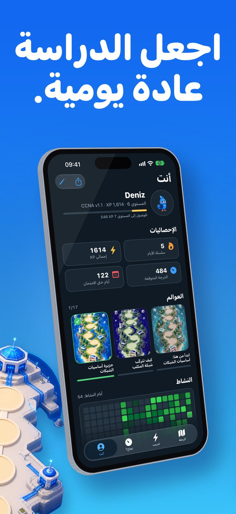
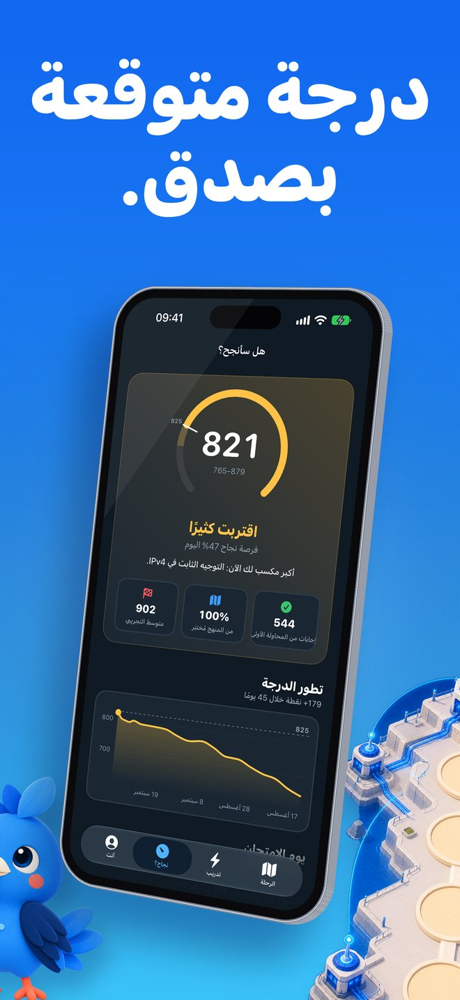

ما هو Linkwing؟
تعلّم الشبكات من الصفر مع Kavi، ثم اقترب خطوة بخطوة من اختبار CCNA 200-301.
Linkwing تطبيق يجعل الشبكات مفهومة: دروس قصيرة بلغة بسيطة، وخريطة مصوّرة، وببغاء كوكاتيل أزرق اسمه Kavi يطير معك من محطة إلى أخرى. لا تحتاج أي خبرة سابقة، ولا حساب، ولا اتصال بالإنترنت.
لقطات الشاشة


لمن هذا التطبيق؟
- المبتدئ الذي لم يسمع بالراوتر والسويتش من قبل
- من يريد التحول إلى مجال تقنية المعلومات والشبكات
- طلاب الحاسب وتقنية المعلومات
- من يستعد لاختبار CCNA 200-301
ابدأ من الصفر
- مسار «ابدأ هنا»: 17 درسًا قصيرًا في عالمين للمبتدئين
- ما هي الشبكة؟ العميل والخادم، السويتش، الراوتر، الجدار الناري، عناوين IP وMAC، الكابلات والألياف، الواي فاي، الشبكات المحلية الافتراضية VLAN، والنسخ الاحتياطي
- تشبيهات من الحياة اليومية ومخططات مرسومة داخل التطبيق
- المس أي كلمة مميزة لتظهر لك معناها بكلمات بسيطة
- في نهاية كل درس أسئلة سهلة، وتشرح لك سبب خطأ كل إجابة خاطئة
يبدأ من مستواك
أخبر التطبيق بمستواك. المبتدئ الجديد يبدأ من الدرس الأول، ومن لديه خبرة يجيب عن فحص قصير من 5 أسئلة متكيفة يتخطى ما يعرفه بالفعل.
خريطة مصوّرة ورفيق يطير معك
- 15 عالمًا لاختبار CCNA على خريطة مرسومة، من أساسيات الشبكات حتى قمة الاختبار
- الجزر تُفتح تباعًا، وKavi ينتقل معك من محطة إلى أخرى
- سلاسل يومية ونقاط XP وأوسمة ومهام يومية، وجلسات قصيرة تناسب يومك
- أداة على الشاشة الرئيسية بسؤال اليوم، وتذكير يومي اختياري
تحضير صادق لاختبار CCNA
- أكثر من 1,100 سؤال أصلي بأسلوب الاختبار: مخرجات الأجهزة، واختيار إجابتين، والترتيب، والمطابقة، والحسابات
- أكثر من 900 بطاقة تعليمية بنظام التكرار المتباعد
- 75 مختبرًا عمليًا لأوامر IOS: اكتب الأوامر بنفسك، والاختصارات مقبولة
- صالة تقسيم الشبكات الفرعية (Subnetting) بتمارين مولّدة لا تنتهي
- اختبارات تجريبية بوقت محدد، موزونة مثل مخطط الاختبار
- يغطي CCNA 200-301 الإصدار v1.1 حاليًا، والإصدار v2.0 اعتبارًا من 3 فبراير 2027
هل سأنجح؟
تبويب «هل سأنجح؟» يعطيك درجة متوقعة من 1000 بعد 40 إجابة حقيقية من المحاولة الأولى فقط. لا أرقام مبكرة مزيفة، ولا وعود بالنجاح. مجرد صورة صادقة عن مكانك، مع قائمة «الطريق إلى يوم الاختبار».
ويعرض لك توقّع يوم الامتحان متى ستكون جاهزًا بوتيرتك اليومية، مع تطوّر درجتك بمرور الوقت.
يعمل دون إنترنت وبثماني لغات
- كل الدروس والأسئلة والبطاقات والمختبرات متاحة دون اتصال
- لا حساب ولا تسجيل
- واجهة بثماني لغات، منها العربية بدعم كامل للكتابة من اليمين إلى اليسار، مع مبدّل لغة داخل التطبيق
دروس المبتدئين بالعربية، ودروس مستوى الاختبار تظهر عناوينها وملخصاتها بالعربية ونصها الكامل بالإنجليزية، أما أسئلة الاختبار ومختبرات IOS فبالإنجليزية.
الاشتراك اختياري
Linkwing مجاني للبدء. يتيح لك اشتراك Linkwing Pro الاختياري (يتجدد تلقائيًا) فتح المحتوى الكامل. تفاصيل الاشتراك تظهر في شاشة الشراء قبل الدفع، ويمكنك إدارته أو إلغاؤه في أي وقت من إعدادات حساب Apple.
الأسئلة الشائعة
ما هو Linkwing؟
Linkwing تطبيق للآيفون يعلّمك شبكات الحاسب من الصفر ويجهّزك لاختبار Cisco CCNA 200-301. يضم 17 درسًا للمبتدئين في عالمين، وخريطة مصوّرة لـ 15 عالمًا من عوالم الاختبار يرشدك فيها Kavi، ببغاء كوكاتيل أزرق، و1,136 سؤالًا أصليًا بأسلوب الاختبار، و929 بطاقة تعليمية، و75 مختبرًا لأوامر IOS، وصالة لتقسيم الشبكات الفرعية، واختبارات تجريبية بوقت محدد. يتطلب iOS 26 أو أحدث، ومطوّره Ata Tunc Bilge.
هل Linkwing مجاني؟
تنزيل Linkwing مجاني ويمكنك البدء دون دفع. Linkwing Pro اشتراك اختياري يتجدد تلقائيًا ويفتح المحتوى الكامل، ويمكنك إدارته أو إلغاؤه من إعدادات حساب Apple.
هل الأسئلة من الاختبار الحقيقي؟
لا. جميع أسئلة Linkwing أصلية ومكتوبة بأسلوب الاختبار، وليست أسئلة مسرّبة من الاختبار الحقيقي. الهدف أن تفهم المادة لا أن تحفظ الإجابات.
هل يغطي Linkwing الإصدار v2.0 من CCNA؟
نعم. يدعم Linkwing الإصدار v1.1 من CCNA 200-301 للاختبارات حتى 2 فبراير 2027، والإصدار v2.0 اعتبارًا من 3 فبراير 2027، ويختار المنهج حسب تاريخ اختبارك. تأكد من التفاصيل في صفحة موضوعات الاختبار الرسمية لدى Cisco.
هل التطبيق بالعربية؟ وهل يعمل دون إنترنت؟
نعم. واجهة التطبيق متاحة بثماني لغات منها العربية مع دعم كامل للكتابة من اليمين إلى اليسار، ويمكنك تغيير اللغة من داخل التطبيق. دروس المبتدئين الـ 17 مترجمة بالكامل إلى العربية، بما فيها شروح المخططات ومسرد من 60 مصطلحًا يظهر معناه باللمس. أما دروس مستوى الاختبار فتظهر عناوينها وملخصاتها بالعربية ونصها الكامل بالإنجليزية. أسئلة الاختبار ومختبرات IOS باللغة الإنجليزية، لأن اختبار CCNA يُقدَّم بالإنجليزية واليابانية. يعمل Linkwing دون إنترنت ولا يحتاج إلى حساب.